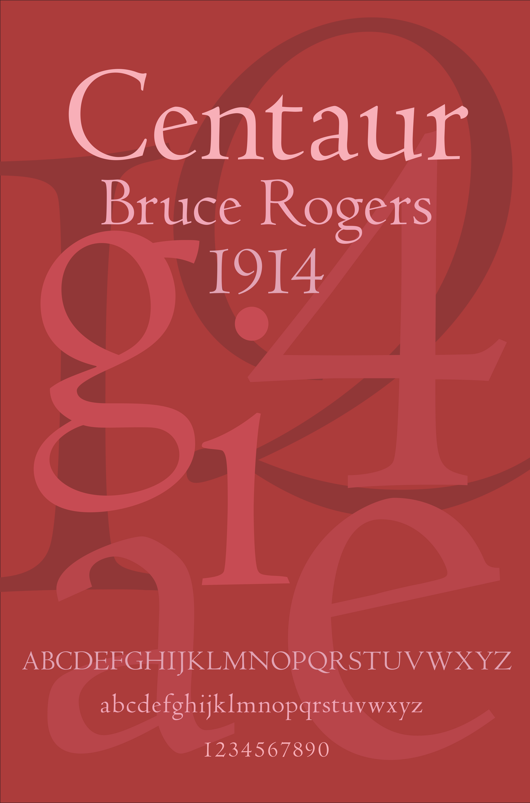

Back
Type Poster
The goal of this project was to create a 'Typographic Poster' that would contain the attributes of that typeface itself using only the information of typeface's creator, year it was created, and a set of numbers and full alphabet in both lowercase and uppercase with proper kerning. To create some sort of visual depth and also display the characteristics of some of the more unique letters, certain letters were used to create a background. Additionally, the constraints of this poster was to limit color usage to either single color, monochromatic, or analogous colors.
 First I drafted up some roughs of potential posters. Some of the explored a more plain style with ornamentations based on the symbols from the typeface
itself.
First I drafted up some roughs of potential posters. Some of the explored a more plain style with ornamentations based on the symbols from the typeface
itself.
This was one of the two finals I chose. I liked this one because the background utilizes the full alphabet and numerals, but it's overlayed on one another to create a visual depth and a spotlight on the unique style of 'e' in Centaur. While Centaur is
a "bookfont" this does feel like a very standard cover for a book, and it was critiqued by my peers to be boring. The final poster I ended up with a sense of visual depth in a less cluttered way. It's cleaner and it picks only a few of Centaur's
more characteristic letters and spotlights those with the required three lines at the bottom - still within the constraints.